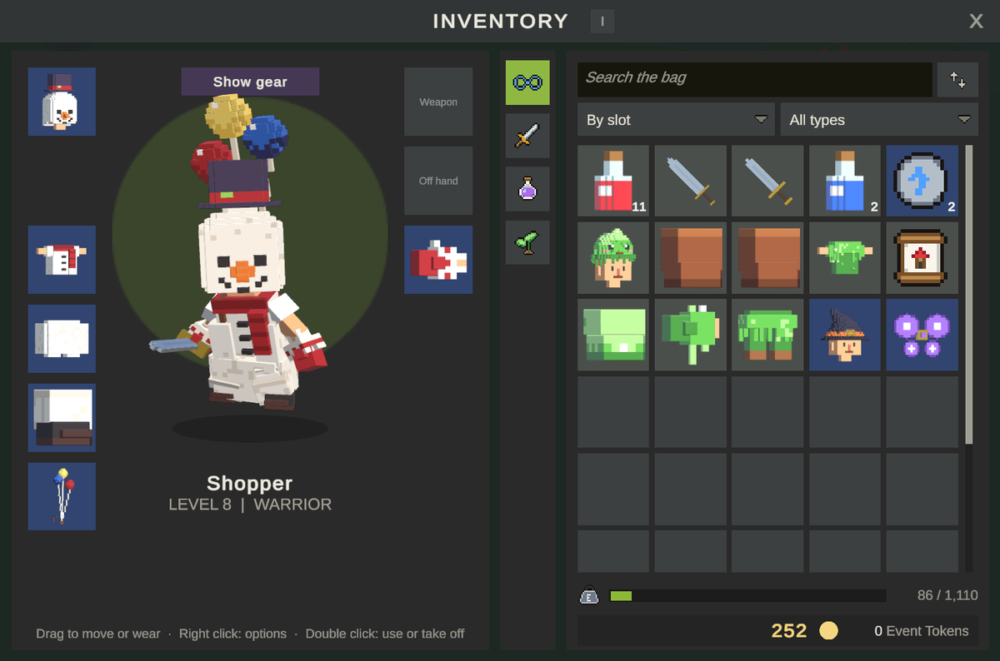
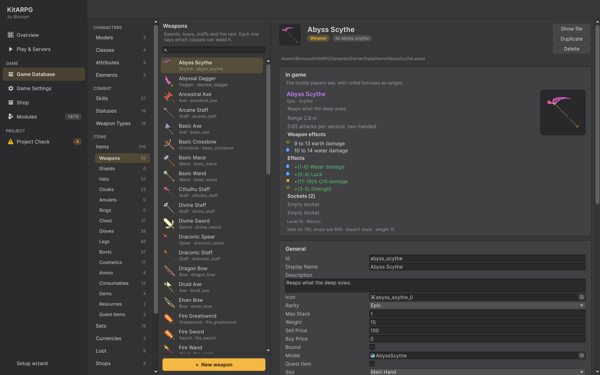
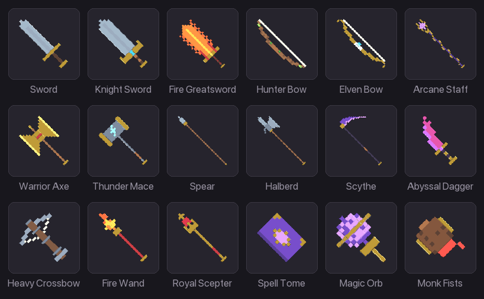
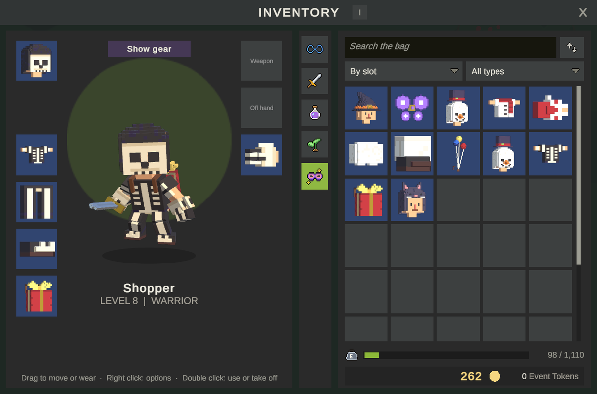

装备
装备是角色穿戴或持握的所有东西：盔甲、饰品、武器、盾牌、弹药和时装。本页介绍装备栏位、盔甲、武器、武器类型和弹药的每个字段、按副本随机的加成、时装，以及如何一步步制作武器。
栏位

每件装备有一个栏位（EquipSlot）。角色有十二个装备位置，外加覆盖其上的八个时装位置。
| 栏位 | 位置 | 放什么 | 在身体上的显示 |
|---|---|---|---|
| Head | 0 | 帽子、头盔、兜帽、王冠 | 替换头部区域（并隐藏头发，除非设置了 Keeps Hair） |
| Chest | 1 | 盔甲、长袍、衬衫 | 替换胸部区域 |
| Hands | 2 | 手套、护手、护腕 | 替换手部区域 |
| Legs | 3 | 裤子、裙子、护胫 | 替换腿部区域 |
| Feet | 4 | 靴子、鞋 | 替换脚部区域 |
| MainHand | 5 | 武器 | 持于右手骨骼（标记了 Left Hand 的物品持于左手） |
| OffHand | 6 | 盾牌、副手物品、武器类型允许双持的第二把单手武器 | 持于左手骨骼 |
| Ring | 7 和 9 | 戒指。角色可戴两枚：戒指可以放在任一戒指位置。 | 不显示 |
| Amulet | 8 | 项链和护身符 | 不显示 |
| Ammo | 10 | 箭、弩矢 | 不显示 |
| Back | 11 | 披风、背包、翅膀 | 添加在背部（身体在那里没有任何东西） |
装备时服务器执行的规则：
- 角色必须满足物品的 Required Level，并且是其 Classes 之一（列表不为空时）。
- 双手武器和副手物品不能同时装备。装备其中一个会把另一个送回背包；如果背包没有空间，装备会被拒绝。
- 单手武器只有在其武器类型带有 Dual Wield 时才能放入副手。
- 纯时装物品只能放在时装位置。
玩家通过把物品从背包拖到栏位，或在背包中右键点击物品来装备；右键点击已穿戴的物品会卸下它。背包按重量限制时，穿戴的装备仍计入背包重量。参见背包与仓库。
装备在编辑器中的位置
Game Database > Items > Items 为每类装备设有一个子分类：Weapons、Shields、Hats、Cloaks、Amulets、Rings、Chest、Gloves、Legs、Boots、Cosmetics 和 Ammo。在其中创建的新条目已带有正确的栏位。你也可以用 Create > KitARPG > Items > Armor、Weapon 和 Ammo 创建资源。
物品页面显示玩家看到的提示框，随机加成显示为范围。带有固定加成的装备会显示一张提供 Make them roll 的卡片（参见随机加成）。
盔甲字段
盔甲（EquipmentData）拥有物品的所有字段，外加以下字段，分组在卡片中。
栏位与时装
| 字段 | 作用 | 默认值 |
|---|---|---|
Slot（slot） |
穿戴的位置。 | Chest |
Cosmetic（cosmetic） |
只改变外观。穿在其区域上方的时装位置，永不提供数值，也不能放在其他地方。 | Off |
谁可以使用
| 字段 | 作用 | 默认值 |
|---|---|---|
Required Level（requiredLevel） |
可以穿戴它的最低角色等级。提示框显示 "Requires level N"，阅读者低于该等级时以橙色显示。 | 1 |
Classes（classes） |
可以穿戴或持握它的职业。留空表示任何职业。不符合时提示框显示 "Your class can't use this"。 | 空 |
加成
| 字段 | 作用 | 默认值 |
|---|---|---|
Random Bonuses（randomBonuses） |
数值、属性、伤害和抗性，各带最小值和最大值。每个副本在生成时随机取自己的值并永久保留。最小值和最大值相同则永不变化。见下文。 | 空 |
Bonuses（bonuses） |
永不随机的加成，例如技能等级。一个完整的修正值组合。 | 空 |
外观与穿戴
| 字段 | 作用 | 默认值 |
|---|---|---|
Model Variants（modelVariants） |
为需要自己适配的玩家模型提供的其他部件：Model Id（玩家模型的 id）和 Model。角色使用其模型对应的变体，没有时使用 Model。 | 空 |
Keeps Hair（keepsHair） |
覆盖在头发上而不是替换头发的头部装备，例如王冠或头带。 | Off |
Max Durability（maxDurability） |
0 表示永不损耗。每个副本都随之保存一个耐久值；套件自身的系统不会降低它，因此它留给你自己的规则使用。 |
0 |
Set（set） |
该部件所属的装备套装。 | None |
强化与镶孔
| 字段 | 作用 | 默认值 |
|---|---|---|
Upgradable（upgradable） |
可以在锻造台强化（+1、+2……）。 | On |
Upgrade（upgrade） |
它自己的强化规则。留空则使用游戏数据库的规则。 | None |
Sockets（sockets） |
能镶嵌多少颗宝石。 | 0 |
Salvage（salvage） |
分解或损坏时给予什么。留空则使用强化规则中的设置。 | 空 |
以上内容详见套装、强化与镶孔。
手持
| 字段 | 作用 | 默认值 |
|---|---|---|
Left Hand（leftHand） |
武器和盾牌：模型由左手骨骼持握。示例中的弓使用它。 | Off |
Hold Position（holdPosition） |
相对于手部骨骼的偏移，单位为米。 | 0, 0, 0 |
Hold Rotation（holdRotation） |
相对于手部骨骼的旋转，单位为度。 | 0, 0, 0 |
Worn Effect（wornEffect） |
穿戴期间循环播放的特效。手持装备把它挂在其模型上，形状设为 Mesh Renderer 但未指定渲染器的粒子系统会从武器网格发射（请在武器网格上开启 Read/Write）。身体装备把它挂在其区域的骨骼上，每只手或脚一个。 | None |
武器


武器（WeaponData）是主手中的盔甲，带有伤害和武器类型。新武器从 MainHand 栏位开始，堆叠上限为 1。
| 字段 | 作用 | 默认值 |
|---|---|---|
Weapon Type（weaponType） |
剑、弓、法杖……决定射程、速度、单双手、弹药和攻击特效。技能可以要求它。 | None |
Damages（damages） |
普通攻击的伤害取值，每种元素一个：Element（留空为默认元素）、Min 和 Max。每个取值都是其元素的一次独立命中。 | 一个中性取值，4 到 6 |
普通攻击会在每个条目的最小值和最大值之间取值，加上攻击者对该元素的伤害，乘以威力，扣除防御者对该元素的抗性和百分比抗性，再把各元素相加。暴击会乘以总值。完整公式见战斗。
强化武器会按强化百分比提高其伤害取值并取整：10 到 14 的剑在 +20% 时打出 12 到 17。
技能随武器成长：带有 Weapon Scale 的伤害效果会加上武器取值乘以该比例。参见技能。
武器类型
武器类型位于 Game Database > Combat > Weapon Types。用 Create > KitARPG > Items > Weapon Type 创建一个。
| 字段 | 作用 | 默认值 |
|---|---|---|
| Id、Display Name、Description、Icon | 与所有游戏数据资源相同。显示名称是武器在提示框中的分类。 | |
Two Handed（twoHanded） |
占用双手，因此副手不能放任何东西。 | Off |
Dual Wield（dualWield） |
该类型的单手武器也可以放在副手。此时普通攻击在两只手之间轮流进行；技能使用主手。 | Off |
Uses Ammo（usesAmmo） |
每次普通攻击以及每个使用武器攻击的技能，都会消耗弹药栏位中的一发弹药。没有合适的弹药时武器无法攻击。 | Off |
Attack Range（attackRange） |
普通攻击的距离，单位为米。 | 2 |
Attacks Per Second（attacksPerSecond） |
在计入角色攻击速度之前的每秒普通攻击次数。 | 1 |
Effects（effects） |
普通攻击的特效：每次命中时攻击者身上的 Launch Effect（挥砍轨迹或闪光）、Projectile（预制体、发射的挂点以及以米每秒计的速度；伤害在到达时生效）以及被击中者身上的 Hit Effect（留空则使用元素的特效）。 | 右手上的发射特效，无投射物 |
每种武器类型的攻击动画在每个角色上设置，即玩家模型的 Character Animations 中。参见动画。
示例中有 16 种武器类型：
| 类型 | 单双手 | 射程 | 每秒攻击次数 | 其他 |
|---|---|---|---|---|
| Sword | 单手 | 2 | 1.2 | 双持 |
| Greatsword | 双手 | 2.5 | 0.8 | |
| Spear | 双手 | 3 | 1 | |
| Bow | 双手 | 12 | 1 | 使用弹药，箭矢投射物 |
| Axe | 单手 | 2 | 1.1 | 双持 |
| Mace | 单手 | 2 | 0.9 | |
| Halberd | 双手 | 3.2 | 0.8 | |
| Scythe | 双手 | 2.8 | 0.85 | |
| Crossbow | 双手 | 14 | 0.7 | 使用弹药，箭矢投射物 |
| Wand | 单手 | 9 | 1.1 | 法球投射物 |
| Staff | 双手 | 11 | 0.8 | 法球投射物 |
| Scepter | 单手 | 9 | 1 | 法球投射物 |
| Tome | 单手 | 10 | 0.9 | 法球投射物 |
| Orb | 单手 | 10 | 1 | 法球投射物 |
| Dagger | 单手 | 1.6 | 1.5 | 双持 |
| Fist | 单手 | 1.6 | 1.4 | 双持 |
弹药
弹药（AmmoData）是穿戴在弹药栏位中的装备。新弹药物品的堆叠上限为 500，重量为 0，Upgradable 关闭。
| 字段 | 作用 | 默认值 |
|---|---|---|
Weapon Types（weaponTypes） |
可以发射它的武器类型。留空表示任何带有 Uses Ammo 的类型。 | 空 |
所有其他盔甲字段都适用。弹药在穿戴期间其加成生效，因此火焰箭可以为每次射击增加火焰伤害。示例中有供弓使用的 Arrows 和 Fire Arrows（+4 Fire 伤害），以及供弩使用的 Bolts 和 Frost Bolts（+4 Water 伤害）。Hunter 开始时穿戴着 200 支 Arrows。
弹药会堆叠，因此不能有随机加成：带有自己取值的副本无法共享一个堆叠。把弹药加成放在 Bonuses 中。Project Check 会对任何既堆叠又随机的装备发出警告，并提供 Make bonuses fixed。
按副本随机的加成
装备上的每项加成都可以有最小值和最大值。生成副本时（作为掉落、购买、作为初始物品、任务奖励），服务器会为每项加成在两者之间随机取一个整数，该副本永久保留这些值。两顶 Knight Helm 很少完全相同。
随机加成的字段
| 字段 | 作用 | 默认值 |
|---|---|---|
Target（target） |
它提升什么：Stat（固定值）、Stat Percent（数值总值的百分比）、Damage（固定元素伤害）、Resistance（固定元素抗性）、Resistance Percent 或 Attribute（点数）。 | Stat |
Stat（stat） |
数值，从列表中选择。仅用于 Stat 和 Stat Percent。 | 空 |
Element（element） |
仅用于 Damage、Resistance 和 Resistance Percent。留空为默认元素。 | None |
Attribute（attribute） |
仅用于 Attribute。 | None |
Min（min） |
最小值，整数。 | 0 |
Max（max） |
最大值。如果你把最小值和最大值填反，套件会把较小的值作为最小值。 | 0 |
百分比以整数点计算：5 是 5%。这包括 Stat Percent、Resistance Percent，以及以百分比显示的数值上的 Stat（暴击、威力、攻击速度等）：critChance 上从 1 到 3 的 Stat 取值提供 1% 到 3% 的暴击。
玩家看到什么
- 副本的提示框显示其取值："+7 Health"。在提示框显示范围的地方，会附上范围："+7 Health (3-9)"。
- 没有副本时（在商店中、在 Game Database 中），显示范围："+(3-9) Health"。
- 最小值和最大值相同的加成显示为普通的 "+5 Health"。
取值如何运作，逐步说明
- 按顺序读取物品的 Random Bonuses 列表。
- 对每个条目，从最小值到最大值（两端都包含）中选取一个整数。
- 这些值按其在列表中的位置随副本保存。
- 副本被穿戴时，每个值加到物品的固定 Bonuses 上，然后强化百分比（如果有）会提升总值，固定加成和随机加成都一样。
- 副本镶孔中的宝石加上它们自己的加成，套装加成每个套装加一次。
如果你以后修改物品的范围，已保存的副本保留其值，超出新范围的会被拉回新范围内。在物品还没有随机加成时生成的副本，会在加载时获得新的取值。由于值按位置保存，请在列表末尾添加新的加成；重新排序会把值移到其他加成上。
带有取值的副本永远不会堆叠。加载角色或仓库时，现在可以堆叠的物品的零散副本（例如还带有取值时保存的弹药）会被合并成堆叠。
把固定加成变为随机取值
带有固定加成的装备在其 Game Database 页面上会显示一张卡片："N fixed bonuses that never roll. Turn them into min and max ranges, 25% up and down?"，并附带 Make them roll。它把每项固定数值、百分比、伤害、抗性和属性变为以其值为中心、上下浮动 25% 的范围（8 变为 6 到 10；小于 2 的值不会展开）。对已在 Random Bonuses 中的目标的加成会扩大那一项；其余的加在末尾。技能等级不能随机，因此它们保留在 Bonuses 中。
示例中的装备就是这样制作的：构建示例时每项固定加成都变成了范围。
反向操作是 Project Check 中的 Make bonuses fixed，它把每个范围变为其中间值并清空 Random Bonuses。用于会堆叠的物品。
时装

时装改变某个区域的外观而不影响数值：玩家可以继续戴着加成好的帽子，同时在其上显示另一顶帽子。
- 有 8 个时装位置，分别覆盖 Head、Chest、Hands、Legs、Feet、Back、MainHand 和 OffHand。
- 该区域的任何部件都可以放在其时装位置，即使是带有数值的装备；在那里它只算作外观。
- 开启了 Cosmetic 的物品只能放在时装位置。从背包装备它会把它放到其时装位置。
- 职业和等级规则仍然适用。
- 时装位置不提供任何东西：没有数值、不算套装部件、不满足条件。
- 时装武器只在同一武器类型的真实武器上方显示，因此攻击仍与动画匹配。
在游戏中，背包的角色面板有 Show cosmetics / Show gear，用于在装备和外观之间切换栏位，背包还有一个 Cosmetics 标签页。在 Game Database 中，时装有自己的子分类。
示例中的帽子商人出售服装和套装：Cat Hood、Bunny Hood、Witch Hat、Pirate Coat、Fairy Wings Costume、Snowman 和 Skeleton 套装、Party Balloons 以及 Gift Box。
制作武器
本例制作一把 Storm Spear：一把 8 级、供战士和猎人使用的双手长矛，造成中性和风属性伤害，随机附带少量风伤害和敏捷，并能镶嵌一颗宝石。
- 打开 Game Database > Items > Weapons 并按 + New weapon；从武器类型中选择 Spear。在 Id 中输入
storm_spear，在 Display Name 中输入Storm Spear，并写一段 Description。 - 把 Rarity 设为 Rare，Sell Price 设为 60，Weight 设为 6。Max Stack 保持为 1。
- 在 Damages 中，把第一个取值设为 Neutral 5 到 8，并添加第二个取值：Air 6 到 9。
- 在 Who can use it 中，把 Required Level 设为 8，并把 Warrior 和 Hunter 加入 Classes。
- 在 Bonuses 中，添加两项 Random Bonuses：
- Target Damage、Element Air、Min 1、Max 3。
- Target Attribute、Attribute Agility、Min 0、Max 3。
- 只有永不应随机的加成才放在 Bonuses 中，例如 Skills 中 Charge 的
+1等级。 - 在 Upgrades and sockets 中，把 Sockets 设为 1。Upgrade 留空以使用数据库的规则。
- 在 Look and wear 和 Held in hand 中，把 Model 设为长矛的模型，并调整 Hold Position 和 Hold Rotation 直到它稳稳地握在手中。进入 Play 并在背包的角色肖像中查看。
- 运行 KitARPG > Render Missing Item Icons 生成图标。
- 把它加入某个怪物的掉落表或某个商店。在背包中，提示框显示 "5 to 8 neutral damage"、"6 to 9 air damage"，然后在副本存在之前显示 "+(1-3) Air damage" 和 "+(0-3) Agility"。
要让任何职业都能使用该长矛，让 Classes 保持为空。要让技能要求长矛，把 Spear 类型加入技能的 Weapons。
制作一件盔甲
- 打开 Game Database > Items > Chest 并按 + New chest piece。设置 Id 和 Display Name。
- 把 Model 设为一个包含名为
<Name>_Chest的网格、绑定到你身体骨骼的模型。对于其他身体，添加以其模型 id 为键的 Model Variants 条目。 - 像武器一样设置 Required Level、Classes、Random Bonuses 和 Sockets。
- 如果它属于某个装备套装，设置 Set。
单人模式和 MMO
装备规则在两种模式下相同，并在服务器上运行。每个副本的取值、强化等级和宝石会发送给其拥有者用于提示框。其他玩家只接收每个位置上的物品 id，这正是他们绘制装备所需的全部信息。
- 在 MMO 中，取值、强化等级和宝石保存在
item_instances中该副本所在行的Extra列中。 - 在单人模式中，它们保存在角色的 JSON 内。
提示
- 给胸甲比手套更大的取值。示例按每件装备的大小缩放其加成：胸甲提供的是手套的三倍。
- 对于定义物品特色的加成，让 Min 大于 0，这样就没有副本会显得空洞。
- 在装备上使用 Classes，永远不要在职业上列出武器：每个物品只需在一个地方编辑。
常见错误
- 某物品的两个副本无法堆叠。 该物品有随机加成。会堆叠的装备必须使用固定加成。
- 随机值移到了错误的加成上。 Random Bonuses 中的条目被重新排序，或中间的某一项被删除了。请在末尾添加新条目。
- 弓无法攻击。 它的类型使用弹药，但没有穿戴合适的弹药。检查弹药的 Weapon Types。
- 匕首无法放入副手。 Dagger 武器类型需要 Dual Wield，且匕首不能是双手武器。